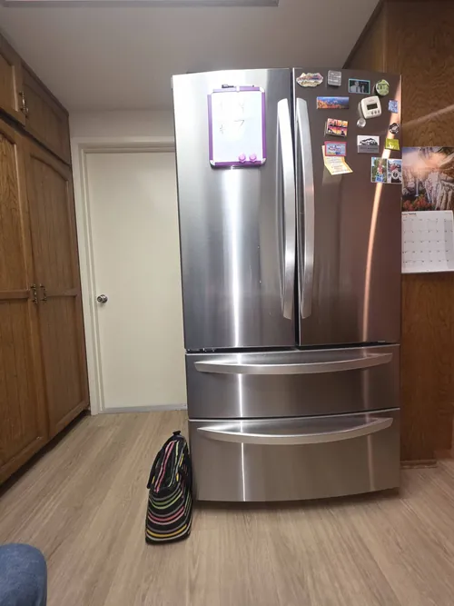

LG Refrigerator Repair: How to Prevent Food Spoilage During Cooling Failure
A refrigerator cooling failure can happen without warning and quickly become a stressful situation for any homeowner. Beyond the inconvenience of a malfunctioning appliance, the greatest concern is often the potential loss of food. Perishable items such as meat, dairy products, leftovers, and fresh produce can spoil rapidly when proper temperatures are not maintained. Understanding how to respond during a cooling failure can help reduce food loss, protect your family’s health, and minimize the impact of an unexpected refrigerator breakdown.
One of the first signs of a cooling problem is often a change in food temperature. Beverages may not feel as cold as usual, milk may spoil faster, ice cream may become soft, or condensation may appear inside the refrigerator compartment. These early warning signs should never be ignored. Scheduling professional LG refrigerator repair as soon as cooling performance changes can help prevent complete system failure and reduce the risk of significant food spoilage.
When a refrigerator begins losing cooling capacity, it is important to keep the doors closed as much as possible. Every time the door is opened, warm air enters the appliance and accelerates temperature increases. A refrigerator that remains closed can often retain safe temperatures for several hours, while frequent door openings may shorten that time considerably. Limiting access helps preserve cold air and protects food for a longer period.

Homeowners should also avoid placing warm food inside a refrigerator that is already experiencing cooling problems. Warm containers increase internal temperatures and place additional stress on an already struggling cooling system. During a cooling failure, reducing heat sources inside the refrigerator can help maintain lower temperatures for a longer period.
If the refrigerator stops cooling completely, monitoring food safety becomes essential. Perishable foods should be evaluated carefully, especially if temperatures have remained above safe refrigeration levels for an extended period. Dairy products, seafood, poultry, and cooked foods are generally more vulnerable to spoilage than condiments or certain produce items. When in doubt, food safety should always take priority.
The freezer compartment may provide additional protection during a cooling failure. A fully stocked freezer retains cold temperatures longer than a partially filled freezer because frozen items help maintain lower temperatures. Keeping the freezer door closed as much as possible can help preserve frozen food while waiting for professional LG refrigerator repair service.
Many homeowners attempt temporary solutions such as lowering temperature settings or repeatedly restarting the appliance. While these actions may occasionally produce short term results, they rarely resolve the underlying problem. Cooling failures are often caused by compressor issues, airflow restrictions, evaporator fan problems, control board malfunctions, sensor failures, or other technical conditions that require accurate diagnostics.
Professional LG refrigerator repair focuses on identifying and correcting the actual source of the failure.Portable coolers can be helpful when cooling interruptions are expected to last several hours. Transferring high value or highly perishable food items into insulated coolers with ice packs may reduce spoilage risk while repair service is being arranged. This is particularly useful during warm weather when food temperatures can rise more quickly.
Modern LG refrigerators often provide warning signs before complete cooling failure occurs. Unusual noises, extended running cycles, inconsistent temperatures, frost buildup, error codes, and poor ice production may all indicate developing refrigerator problems. Addressing these symptoms early can significantly reduce the likelihood of a major cooling failure and the food loss that often follows.
Preventive maintenance also plays an important role in protecting food and refrigerator performance. Cleaning condenser coils, replacing water filters, inspecting door gaskets, and responding quickly to performance changes can help improve cooling efficiency and reduce the risk of unexpected breakdowns. Routine maintenance supports long term appliance reliability while helping homeowners avoid costly emergencies.
Perhaps the most important step during any cooling failure is acting quickly. Delaying service allows temperatures to continue rising and increases the risk of additional refrigerator damage. Early diagnostics often result in faster repairs and better outcomes for both the appliance and the food stored inside.
Professional LG refrigerator repair helps restore proper cooling performance while protecting your investment in both the appliance and the groceries it contains. Whether your refrigerator is showing early signs of cooling trouble or has stopped cooling completely, prompt action and accurate diagnostics can help minimize food spoilage, improve appliance reliability, and return your refrigerator to normal operation as quickly as possible.